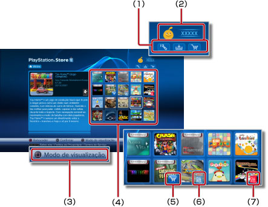

PlayStation®Network > Vista geral da PlayStation®Store
Vista geral da PlayStation®Store
Para utilizar esta função, poderá ter de actualizar o software de sistema.
 (PlayStation®Store) é uma loja online da PlayStation®Network, onde pode transferir produtos (pagos ou grátis) tal como jogos, itens adicionais para jogos ou conteúdo de vídeo.
(PlayStation®Store) é uma loja online da PlayStation®Network, onde pode transferir produtos (pagos ou grátis) tal como jogos, itens adicionais para jogos ou conteúdo de vídeo.

(1) |
Botões de controlo
* Alguns itens não podem ser transferidos mais do que uma vez. |
|||||||||
|---|---|---|---|---|---|---|---|---|---|---|
(2) |
Modo de visualização |
|||||||||
(3) |
Produtos (pagos ou grátis) que podem ser transferidos, tal como jogos ou conteúdo de vídeo |
|||||||||
(4) |
O avatar e a ID Online da conta da PlayStation®Network que utilizou para iniciar a sessão * Estes itens só são apresentados se possuir uma conta na PlayStation®Network. |
|||||||||
(5) |
|
|||||||||
(6) |
|
|||||||||
(7) |
* Pode encontrar estes itens na sua lista de transferências. |


Notas
- A PlayStation®Network e (PlayStation®Store) estão disponíveis apenas em determinadas regiões e idiomas. Além disso, os tipos de produtos e conteúdos disponíveis na (PlayStation®Store) variam consoante o país ou região de residência. Para obter detalhes, contacte a linha de suporte técnico da sua região.
- Para transferir produtos (comprados ou gratuitos) de (PlayStation®Store), tem de criar uma conta na PlayStation®Network e aceitar um acordo de utilizador. Pode criar uma conta em
 (Inscrever-se na PlayStation®Network) em
(Inscrever-se na PlayStation®Network) em  (PlayStation®Network).
(PlayStation®Network).